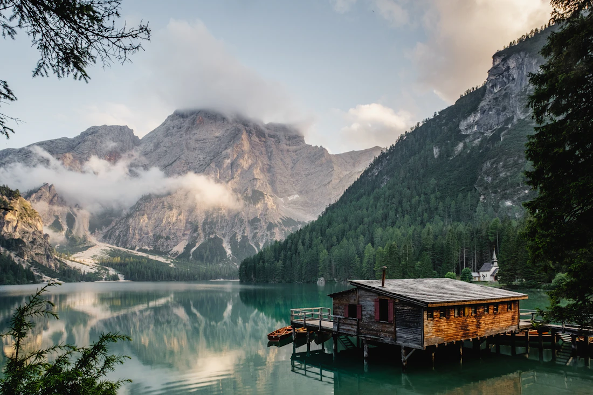

Photography portfolio · Shivamani Reddy
Finding the
extraordinary
in the everyday.
An evolving collection of landscapes, city corners, and fleeting human moments, made to be explored, not just viewed.
Photographs, gathered with intention.

01 / 25Quiet places, loud feelings46° 51′ N, 9° 31′ E
FIELD
NOTES
№ 01
NOTES
№ 01
The collection
Every frame holds
a different world.
From the hush of a distant shoreline to the rhythm of a city street, this is a growing visual journal organized by the places, people, and light that stay with us.
Browse all photographsA few favorites
Recently collected
A living archive
Look closer.
Stay a little.
Browse the photographs, explore how they fit together, or try the collection tools. Every page is part of the same small visual world.
0Photographs
0Categories
01Ongoing journal